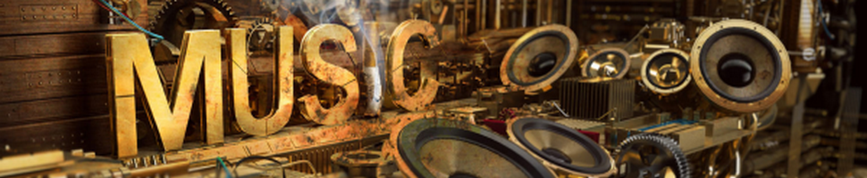
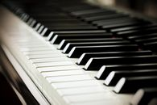

 Piano et Guitare : instruments incontournables dans la musique
Piano et Guitare : instruments incontournables dans la musique
 Depuis longtemps (la 6eme pour être plus précis), j'ai voulu jouer d'un instrument.
Mais lequel choisir ? Je m'étais restraint à 2 instruments qui me semblait vraiment important et fournissant des sons et des accords très différents, bien qu'étant tous les deux
des instruments à corde. Au final, mon choix s'est porté sur le piano à cause des grandes possibilités de style et de genre que l'on peut interpréter avec ce petit instrument.
Les débuts ont été difficile et peu motivant: avec un prof aussi lent et paresseux, difficile de progresser et j'ai perdu la motivation au bout d'un an seulement. Cependant, quelques mois après,
j'ai voulu reprendre les cours avec un prof différent, qui d'ailleurs était complètement différent du premier: une personne très sympathique, joyeuse de nature qui
partage cette même passion du piano et qui veut la transmettre aux jeunes. J'ai tellement appris avec elle, et j'ai passé tellement de bons moment avec elles et ses autres élèves :).
Malheureusement, à mon arrivée en prépa, j'ai dû arrêter les cours pour me consacrer aux études (qui au final ne m'auront pas servi à grand chose car je travaille dans un domaine complètement différent de mon domaine d'origine. Franchement,
le destin est parfois dur ; mais cela n'empêche pas d'apprécier le nouveau chemin vers lequel j'ai été poussé). Eventuellement, j'ai continuer de jouer du piano en autodidacte et je parviens même à composer
quelques chansons (ce que j'ai déjà dit dans la page d'accueil d'ailleurs, oh mon Dieu je radote déjà), et je suis plutôt fier de moi. Dès que j'aurais finalisé ces morceaux, je ne manquerais pas de les mettre sur mon site, alors restez patient.
D'autre part, j'ai décidé d'apprendre à jouer de la guitare. En effet, ces 13 années de frustration depuis le premier choix
de mon instrument m'ont rattrapé. Néanmoins, je n'ai acheté que le petit livre d'apprentissage sans la guitare, comme je viens juste de décider. Me connaissant, cela va sans doute prendre encore quelques semaines avant que je m'y mette vraiment.
Mais ne vous inquiétez, je sais à quel point vous voulez me voir jouer de la guitare (j'espère en tout cas) et je vous informerez de ma progression au fil des semaines.
Voila, le début de mon histoire d'amour avec la musique. La suite viendra bientôt (to be continued).